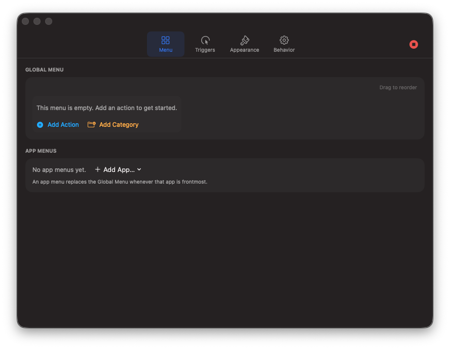
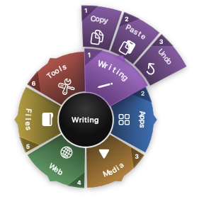
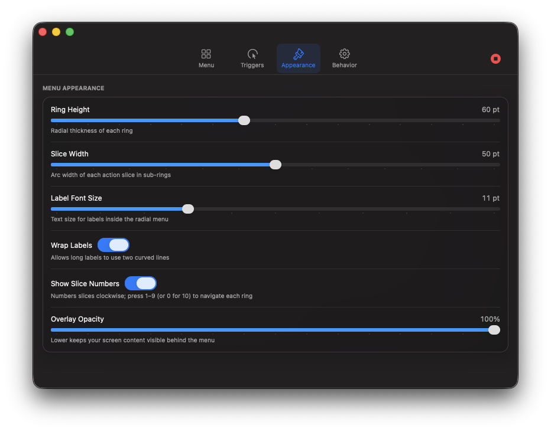
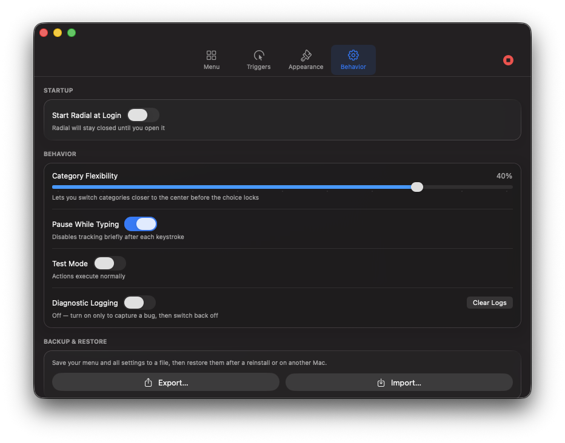

A launcher shaped around you
Your actions, one gesture away.
Radial puts a customizable circular menu under the pointer. Open it, move toward what you want and confirm—without hunting through menus or memorizing every shortcut.
Requires macOS 26.4 or later · Signed, not notarized · No sample content on a fresh install
Move into Writing to reveal its actions, then continue outward to select Copy .
Install First category & action Using the ring Action types All settings Tips & tricks App menus Backup
Start here
Install Radial and grant access. A fresh installation opens with an empty menu. That is deliberate: your first slices should reflect how you work.
1 Install the app Download the latest Radial.zip . Unzip it and drag Radial.app to Applications. Right-click Radial, choose Open , then confirm. This one-time step is needed because the release is signed but not notarized. 2 Allow Accessibility Open System Settings → Privacy & Security → Accessibility when macOS asks. Enable Radial. Quit and reopen it if macOS does not apply the permission immediately. Look for the Radial icon in the menu bar; it runs without a Dock icon.

1 A fresh install really starts empty. Open Menu , then use Add Category to build the first ring.
Optional: open Settings → Behavior and enable Start Radial at Login . If macOS requires approval, Radial offers a button to open Login Items settings.
Using the overlay
Outward to choose. Inward to reconsider. The pointer starts in the center. Enter a category slice to reveal its actions on the next ring.
1 Move from the center into Writing .2 Continue outward into Copy , Paste or Undo .3 Lift or click—depending on Triggers—to confirm.Move inward to return to the previous ring. Return to the center to cancel.

Numbers restart on every ring. Press 1–9 , or 0 for slice 10.
Action types
From one keystroke to a complete workflow. Every action has a name, icon and colour. Its type determines what happens when selected.
⌘
Keyboard Shortcut Record a key plus Command, Shift, Option or Control. Radial sends it to the active app.
A
Open Application Browse to an app and optionally show its own icon on the slice.
⌂
Open Folder or File Choose a local item. Folders open in Finder and files use their default app.
↗
Open URL Open a web address, mailto: link or app URL scheme such as raycast://.
◈
Shortcuts App Select a workflow from Apple’s Shortcuts app. Refresh if a new one is not listed.
>_
Shell Command Run a command in the background. Only use commands you understand and trust.
♪
Media Control Play/pause, next, previous, volume up, volume down or mute.
⋯
Automation Combine actions into ordered steps and set the delay before each next step.
Settings explained
Tune invocation, selection and appearance separately.
Triggers Keyboard Shortcut Choose a key combination or double-tap a modifier. Double-tap Window controls the allowed interval. Trackpad Trigger Use Tap to Click or a physical Click, with an instant-to-1.5-second hold. Lift to Select Confirm by lifting. Turn it off to wait for another tap or click. Mouse Trigger Use left-click-and-hold or middle-click, and optionally Release to Select. Switch Menu Key Use the configured key—or scroll—to switch an app menu and global menu. Enable only the trigger methods you actually want to use. Appearance Ring Height Changes every ring’s radial thickness. Increase it for larger targets; decrease it for a compact menu. Slice Width Changes the arc width of actions in outer rings. Increase it to spread out crowded actions. Label Font Size Sets the size of text inside slices. Wrap Labels Allows long labels to use two curved lines. Show Slice Numbers Numbers slices clockwise; press 1–9, or 0 for slice 10, on each ring. Overlay Opacity Controls how much screen content remains visible behind Radial. 
1 2 3 1 Ring thickness · 2 Outer-slice width · 3 Slice numbers Behavior Start Radial at Login Registers Radial with the native macOS login-item service. Category Flexibility Lets you change categories closer to the center before the choice locks. Higher values forgive less precise paths. Pause While Typing Briefly suspends tracking after a keystroke to prevent accidental activation. Test Mode Shows and navigates the real menu but suppresses execution. Diagnostic Logging Writes troubleshooting data to ~/Library/Logs/Radial/Radial.log. Leave it off except while capturing a problem. 
1 2 3 4 1 Start at Login · 2 Flexibility · 3 Test Mode · 4 Backup & Restore
Tips & tricks
Make the menu faster after it feels familiar.
Show numbers Enable Show Slice Numbers . Numbers restart on each ring; slice 10 uses 0 .
Change the size Raise Ring Height for thicker targets and Slice Width to spread crowded action rings. Lower them for a tighter overlay.
Build muscle memory Drag items to reorder them. Keep frequent categories in consistent directions and frequent actions early in their ring.
Break long labels Enable Wrap Labels, or press ⌥Return in a name field to choose the line break yourself.
Nest and reuse Drag an item onto a category to nest it. Duplicate, copy or move actions instead of rebuilding them.
Practice safely Use Test Mode while reorganizing, especially with shell commands or automations.
Speed or certainty Lift to Select is fastest once learned. Turn it off while learning if you prefer an explicit click.
Use the center The center is your escape route. Moving inward also backs out of a subcategory.
Backup & restore
Experiment without losing a setup you like. Settings → Behavior includes Backup & Restore. Export before a major reorganization, then import after a reinstall or on another Mac.
Good habit: keep a dated backup after your directions become muscle memory. Restoring changes the menu and settings to the saved snapshot.